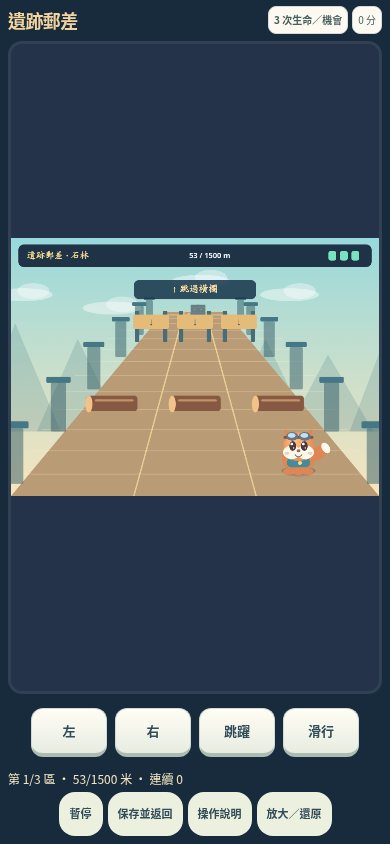
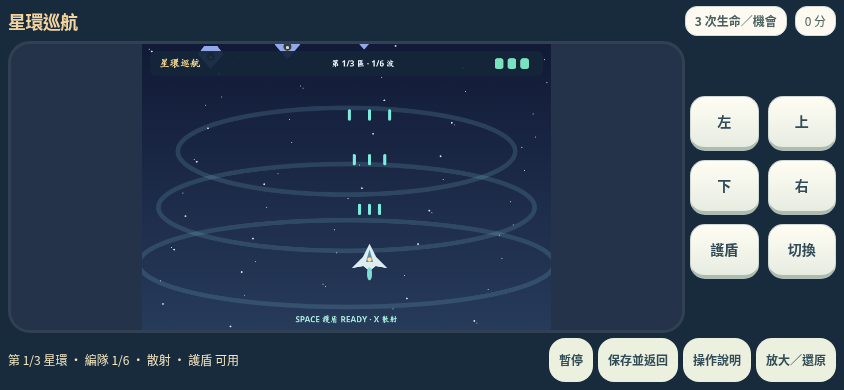

街機 R2
升級及驗證報告
1. 套用內容
| 遊戲 | 玩法 | 電腦操作 |
|---|---|---|
| 遺跡郵差 | 三段1500米路線；跳欄、滑拱門、找石牆缺口，不能只靠左右換線通關。 | ← → 換線；↑／Space 跳；↓ 滑行 |
| 雲島探險 | 三座平台關卡；短跳、高跳、移動台、彈簧、短衝；安全旗幟重生。 | ← → 移動；↑／Space 跳；X 短衝 |
| 星環巡航 | 三區、每區六波編隊與守關機；集中／散射、能量升級、護盾及半血換彈幕。 | 方向鍵移動；Space 護盾；X 切換；Shift 慢移 |
| 燈塔深井 | 60層，移動、輸送、脆裂、彈簧及危險平台；選落點及使用降落傘。 | ← → 移動；↓ 穿台；Space 降落傘 |
| 海港排球 | 有反應時間的電腦對手、高球、短球、扣球、三觸球；先5分領先2分，最多7分。 | ← → 移動；↑ 跳；Space 擊球；↓＋Space 短球 |
所有新增場景由 Canvas 程式繪製；音效和短配樂為合成音。新增街機本身不需要下載外部圖像或音樂。未更換原有英文字庫、數學題庫、判分及角色原圖。原有英文相機／OCR的網絡依賴不在本輪驗收範圍。
2. 舊紀錄與金幣
沿用 R1 的帳戶、孩子及 arcadeV28 資料格式。原有21個遊戲ID及舊分數保留；新增五個ID另外記分。最佳成績上限由63格擴為78格，容納26遊戲×3難度。
入場1幣、每輪5次、有效學習派幣及家長限制均沿用既有規則。暫停／接續／還原不重新扣幣；不自動續幣。純遊戲分數和收集物不轉成學習金幣。
測試在 R1 實際介面建立了 sky-rescue 和 number-garden 的已投幣暫停局面，再把序列化的測試儲存交給R2。R2可接續同一收據和局面，保留餘額、英文詞語及孩子資料。這是相容性測試樣本，不是已存取用戶真正瀏覽器資料。
3. 本輪處理的問題
| 問題／要求 | 本輪處理與驗證 |
|---|---|
| 遊玩前音效解鎖立即被暫停 | 重排音效解鎖流程。原生 AudioContext 量到非零訊號，暫停即停止排程。 |
| 即時音量與靜音不完全生效 | 分開音效／配樂總線，清除舊自動化再設定即時增益；以兩總線增益及真正分析器樣本核對零音量。 |
| 跑酷只換線便足夠 | 加入橫跨三線的木欄與拱門，要求跳躍／滑行；單用換線的測試路線不能完成。 |
| 重生連死、保護時間再次墮下 | 雲島及深井回到安全平台；保護時間再次跌出場外會安全復位且保留剩餘保護時間，不重複扣命或產生無效高度。 |
| 手機放大反而畫面縮小 | 按實際可用空間計算canvas尺寸；放大時隱藏裝飾角色列；橫向鍵盤移到旁邊，另有可閱讀HTML即時狀態。 |
| 觸控取消後仍當作按住跳躍 | 取消事件清除相應的按住／預輸入狀態；同時按兩個跳躍鍵則保留尚未放開的一個。 |
| 排球末局第四次觸球局面不合法 | 得分時重設觸球計數；結束局亦可通過嚴格存檔核對。 |
| 飛行能量升級只有數字變動 | 能量升級實際增加發射物力度；保留集中與散射差異。 |
4. 已執行結果
| 測試範圍 | 通過／總數 |
|---|---|
| 引擎、舊局面相容、玩法及錢包規則 | 292/292 |
| 五款街機、操作、暫停及畫面尺寸 | 80/80 |
| 原生音訊、音量、觸控事件及儲存失敗 | 26/26 |
| 由 R1 實際建立舊局，再交給 R2 續玩 | 10/10 |
| 英文＋數學整合回歸 | 147/147 |
各案例有獨立ID，但包含相同功能的不同難度、種子及畫面尺寸；不是555個獨立功能。工程化測試和機械路線不是真人覺得好玩的證明。
跑酷、雲島及深井有完整受控路線通關測試；飛行的守關階段及排球終局另有明示狀態夾具。沒有把人工設定局面說成真人全關卡實玩。
第一次音量／觸控測試失敗記錄保留於 safety_first_run.json。其中持續按鍵的早期測試沒有先捲到按鈕位置，是測試腳本問題；已修正腳本。音量總線未生效則是實際程式問題，已修改後重跑。不把首次失敗及重跑數量重複計入上表。
交付前並行啟動三組瀏覽器檢查時，其中一次在載入新頁面時發生 Chromium「Page crashed」。中斷記錄保留於 parallel_run_interruption.json；其後改為逐組執行並重跑通過。這個中斷未被計作通過，也未以測試結果推論真機記憶體壓力已通過。
5. 真實瀏覽器截圖
下列為 Chromium 實際程式畫面；不是新畫的宣傳示意圖。裝置尺寸模擬仍不等同真正 iPhone／Android。


6. 程式來源與保留資料
R1的35段既有腳本中，31段未變動；修改局面驗證、街機目錄／錢包、快照介面及應用宿主4段，再加1段新遊戲引擎。既有英文／數學引擎及題庫維持原位。逐段SHA-256見 source_comparison.json。
新原始碼在 arcade_src/；可重建測試在 arcade_tests/；結果在 arcade_evidence/。R1主程式、入口及舊建置工具在 originals/R1/，更舊完整資料及素材仍在 originals/WordQuest_Program_and_Data_20260929/。
7. 驗收限制
本輪實際做到：Chromium DOM、真實點擊／鍵盤／Pointer Event 路徑、原生Web Audio訊號及不同視窗尺寸。
測試替身：因執行環境禁止檔案／HTTP導航，用 page.set_content() 載入完整頁面；儲存、Web Locks、WebCrypto API接駁使用明示替身。所有學員、餘額、作答均為測試夾具。
未驗收：原生磁碟保存與真正關閉再開瀏覽器、原生跨分頁競爭、Windows啟動器、Safari及手機真機、揚聲器聽感、真實小朋友的難度與趣味、相機／OCR／外部CDN。不是雲端帳戶、安全考試系統或無漏洞／商用認證。
8. 逐項結果
只展開需要查閱的組別，避免一開始載入大量表格。
引擎、舊局面相容、玩法及錢包規則 · 292項
| ID | 案例 | 結果 |
|---|---|---|
| CORE-001 | ruins-courier d0 seed1: bounded snapshots throughout simulated run | 通過 |
| CORE-002 | ruins-courier d0 seed1: checkpoint RNG replay | 通過 |
| CORE-003 | ruins-courier d0 seed12: bounded snapshots throughout simulated run | 通過 |
| CORE-004 | ruins-courier d0 seed12: checkpoint RNG replay | 通過 |
| CORE-005 | ruins-courier d0 seed456: bounded snapshots throughout simulated run | 通過 |
| CORE-006 | ruins-courier d0 seed456: checkpoint RNG replay | 通過 |
| CORE-007 | ruins-courier d0 seed9876: bounded snapshots throughout simulated run | 通過 |
| CORE-008 | ruins-courier d0 seed9876: checkpoint RNG replay | 通過 |
| CORE-009 | ruins-courier d0 seed654321: bounded snapshots throughout simulated run | 通過 |
| CORE-010 | ruins-courier d0 seed654321: checkpoint RNG replay | 通過 |
| CORE-011 | ruins-courier d1 seed1: bounded snapshots throughout simulated run | 通過 |
| CORE-012 | ruins-courier d1 seed1: checkpoint RNG replay | 通過 |
| CORE-013 | ruins-courier d1 seed12: bounded snapshots throughout simulated run | 通過 |
| CORE-014 | ruins-courier d1 seed12: checkpoint RNG replay | 通過 |
| CORE-015 | ruins-courier d1 seed456: bounded snapshots throughout simulated run | 通過 |
| CORE-016 | ruins-courier d1 seed456: checkpoint RNG replay | 通過 |
| CORE-017 | ruins-courier d1 seed9876: bounded snapshots throughout simulated run | 通過 |
| CORE-018 | ruins-courier d1 seed9876: checkpoint RNG replay | 通過 |
| CORE-019 | ruins-courier d1 seed654321: bounded snapshots throughout simulated run | 通過 |
| CORE-020 | ruins-courier d1 seed654321: checkpoint RNG replay | 通過 |
| CORE-021 | ruins-courier d2 seed1: bounded snapshots throughout simulated run | 通過 |
| CORE-022 | ruins-courier d2 seed1: checkpoint RNG replay | 通過 |
| CORE-023 | ruins-courier d2 seed12: bounded snapshots throughout simulated run | 通過 |
| CORE-024 | ruins-courier d2 seed12: checkpoint RNG replay | 通過 |
| CORE-025 | ruins-courier d2 seed456: bounded snapshots throughout simulated run | 通過 |
| CORE-026 | ruins-courier d2 seed456: checkpoint RNG replay | 通過 |
| CORE-027 | ruins-courier d2 seed9876: bounded snapshots throughout simulated run | 通過 |
| CORE-028 | ruins-courier d2 seed9876: checkpoint RNG replay | 通過 |
| CORE-029 | ruins-courier d2 seed654321: bounded snapshots throughout simulated run | 通過 |
| CORE-030 | ruins-courier d2 seed654321: checkpoint RNG replay | 通過 |
| CORE-031 | cloud-island d0 seed1: bounded snapshots throughout simulated run | 通過 |
| CORE-032 | cloud-island d0 seed1: checkpoint RNG replay | 通過 |
| CORE-033 | cloud-island d0 seed12: bounded snapshots throughout simulated run | 通過 |
| CORE-034 | cloud-island d0 seed12: checkpoint RNG replay | 通過 |
| CORE-035 | cloud-island d0 seed456: bounded snapshots throughout simulated run | 通過 |
| CORE-036 | cloud-island d0 seed456: checkpoint RNG replay | 通過 |
| CORE-037 | cloud-island d0 seed9876: bounded snapshots throughout simulated run | 通過 |
| CORE-038 | cloud-island d0 seed9876: checkpoint RNG replay | 通過 |
| CORE-039 | cloud-island d0 seed654321: bounded snapshots throughout simulated run | 通過 |
| CORE-040 | cloud-island d0 seed654321: checkpoint RNG replay | 通過 |
| CORE-041 | cloud-island d1 seed1: bounded snapshots throughout simulated run | 通過 |
| CORE-042 | cloud-island d1 seed1: checkpoint RNG replay | 通過 |
| CORE-043 | cloud-island d1 seed12: bounded snapshots throughout simulated run | 通過 |
| CORE-044 | cloud-island d1 seed12: checkpoint RNG replay | 通過 |
| CORE-045 | cloud-island d1 seed456: bounded snapshots throughout simulated run | 通過 |
| CORE-046 | cloud-island d1 seed456: checkpoint RNG replay | 通過 |
| CORE-047 | cloud-island d1 seed9876: bounded snapshots throughout simulated run | 通過 |
| CORE-048 | cloud-island d1 seed9876: checkpoint RNG replay | 通過 |
| CORE-049 | cloud-island d1 seed654321: bounded snapshots throughout simulated run | 通過 |
| CORE-050 | cloud-island d1 seed654321: checkpoint RNG replay | 通過 |
| CORE-051 | cloud-island d2 seed1: bounded snapshots throughout simulated run | 通過 |
| CORE-052 | cloud-island d2 seed1: checkpoint RNG replay | 通過 |
| CORE-053 | cloud-island d2 seed12: bounded snapshots throughout simulated run | 通過 |
| CORE-054 | cloud-island d2 seed12: checkpoint RNG replay | 通過 |
| CORE-055 | cloud-island d2 seed456: bounded snapshots throughout simulated run | 通過 |
| CORE-056 | cloud-island d2 seed456: checkpoint RNG replay | 通過 |
| CORE-057 | cloud-island d2 seed9876: bounded snapshots throughout simulated run | 通過 |
| CORE-058 | cloud-island d2 seed9876: checkpoint RNG replay | 通過 |
| CORE-059 | cloud-island d2 seed654321: bounded snapshots throughout simulated run | 通過 |
| CORE-060 | cloud-island d2 seed654321: checkpoint RNG replay | 通過 |
| CORE-061 | star-patrol d0 seed1: bounded snapshots throughout simulated run | 通過 |
| CORE-062 | star-patrol d0 seed1: checkpoint RNG replay | 通過 |
| CORE-063 | star-patrol d0 seed12: bounded snapshots throughout simulated run | 通過 |
| CORE-064 | star-patrol d0 seed12: checkpoint RNG replay | 通過 |
| CORE-065 | star-patrol d0 seed456: bounded snapshots throughout simulated run | 通過 |
| CORE-066 | star-patrol d0 seed456: checkpoint RNG replay | 通過 |
| CORE-067 | star-patrol d0 seed9876: bounded snapshots throughout simulated run | 通過 |
| CORE-068 | star-patrol d0 seed9876: checkpoint RNG replay | 通過 |
| CORE-069 | star-patrol d0 seed654321: bounded snapshots throughout simulated run | 通過 |
| CORE-070 | star-patrol d0 seed654321: checkpoint RNG replay | 通過 |
| CORE-071 | star-patrol d1 seed1: bounded snapshots throughout simulated run | 通過 |
| CORE-072 | star-patrol d1 seed1: checkpoint RNG replay | 通過 |
| CORE-073 | star-patrol d1 seed12: bounded snapshots throughout simulated run | 通過 |
| CORE-074 | star-patrol d1 seed12: checkpoint RNG replay | 通過 |
| CORE-075 | star-patrol d1 seed456: bounded snapshots throughout simulated run | 通過 |
| CORE-076 | star-patrol d1 seed456: checkpoint RNG replay | 通過 |
| CORE-077 | star-patrol d1 seed9876: bounded snapshots throughout simulated run | 通過 |
| CORE-078 | star-patrol d1 seed9876: checkpoint RNG replay | 通過 |
| CORE-079 | star-patrol d1 seed654321: bounded snapshots throughout simulated run | 通過 |
| CORE-080 | star-patrol d1 seed654321: checkpoint RNG replay | 通過 |
| CORE-081 | star-patrol d2 seed1: bounded snapshots throughout simulated run | 通過 |
| CORE-082 | star-patrol d2 seed1: checkpoint RNG replay | 通過 |
| CORE-083 | star-patrol d2 seed12: bounded snapshots throughout simulated run | 通過 |
| CORE-084 | star-patrol d2 seed12: checkpoint RNG replay | 通過 |
| CORE-085 | star-patrol d2 seed456: bounded snapshots throughout simulated run | 通過 |
| CORE-086 | star-patrol d2 seed456: checkpoint RNG replay | 通過 |
| CORE-087 | star-patrol d2 seed9876: bounded snapshots throughout simulated run | 通過 |
| CORE-088 | star-patrol d2 seed9876: checkpoint RNG replay | 通過 |
| CORE-089 | star-patrol d2 seed654321: bounded snapshots throughout simulated run | 通過 |
| CORE-090 | star-patrol d2 seed654321: checkpoint RNG replay | 通過 |
| CORE-091 | lighthouse-well d0 seed1: bounded snapshots throughout simulated run | 通過 |
| CORE-092 | lighthouse-well d0 seed1: checkpoint RNG replay | 通過 |
| CORE-093 | lighthouse-well d0 seed12: bounded snapshots throughout simulated run | 通過 |
| CORE-094 | lighthouse-well d0 seed12: checkpoint RNG replay | 通過 |
| CORE-095 | lighthouse-well d0 seed456: bounded snapshots throughout simulated run | 通過 |
| CORE-096 | lighthouse-well d0 seed456: checkpoint RNG replay | 通過 |
| CORE-097 | lighthouse-well d0 seed9876: bounded snapshots throughout simulated run | 通過 |
| CORE-098 | lighthouse-well d0 seed9876: checkpoint RNG replay | 通過 |
| CORE-099 | lighthouse-well d0 seed654321: bounded snapshots throughout simulated run | 通過 |
| CORE-100 | lighthouse-well d0 seed654321: checkpoint RNG replay | 通過 |
| CORE-101 | lighthouse-well d1 seed1: bounded snapshots throughout simulated run | 通過 |
| CORE-102 | lighthouse-well d1 seed1: checkpoint RNG replay | 通過 |
| CORE-103 | lighthouse-well d1 seed12: bounded snapshots throughout simulated run | 通過 |
| CORE-104 | lighthouse-well d1 seed12: checkpoint RNG replay | 通過 |
| CORE-105 | lighthouse-well d1 seed456: bounded snapshots throughout simulated run | 通過 |
| CORE-106 | lighthouse-well d1 seed456: checkpoint RNG replay | 通過 |
| CORE-107 | lighthouse-well d1 seed9876: bounded snapshots throughout simulated run | 通過 |
| CORE-108 | lighthouse-well d1 seed9876: checkpoint RNG replay | 通過 |
| CORE-109 | lighthouse-well d1 seed654321: bounded snapshots throughout simulated run | 通過 |
| CORE-110 | lighthouse-well d1 seed654321: checkpoint RNG replay | 通過 |
| CORE-111 | lighthouse-well d2 seed1: bounded snapshots throughout simulated run | 通過 |
| CORE-112 | lighthouse-well d2 seed1: checkpoint RNG replay | 通過 |
| CORE-113 | lighthouse-well d2 seed12: bounded snapshots throughout simulated run | 通過 |
| CORE-114 | lighthouse-well d2 seed12: checkpoint RNG replay | 通過 |
| CORE-115 | lighthouse-well d2 seed456: bounded snapshots throughout simulated run | 通過 |
| CORE-116 | lighthouse-well d2 seed456: checkpoint RNG replay | 通過 |
| CORE-117 | lighthouse-well d2 seed9876: bounded snapshots throughout simulated run | 通過 |
| CORE-118 | lighthouse-well d2 seed9876: checkpoint RNG replay | 通過 |
| CORE-119 | lighthouse-well d2 seed654321: bounded snapshots throughout simulated run | 通過 |
| CORE-120 | lighthouse-well d2 seed654321: checkpoint RNG replay | 通過 |
| CORE-121 | harbor-volley d0 seed1: bounded snapshots throughout simulated run | 通過 |
| CORE-122 | harbor-volley d0 seed1: checkpoint RNG replay | 通過 |
| CORE-123 | harbor-volley d0 seed12: bounded snapshots throughout simulated run | 通過 |
| CORE-124 | harbor-volley d0 seed12: checkpoint RNG replay | 通過 |
| CORE-125 | harbor-volley d0 seed456: bounded snapshots throughout simulated run | 通過 |
| CORE-126 | harbor-volley d0 seed456: checkpoint RNG replay | 通過 |
| CORE-127 | harbor-volley d0 seed9876: bounded snapshots throughout simulated run | 通過 |
| CORE-128 | harbor-volley d0 seed9876: checkpoint RNG replay | 通過 |
| CORE-129 | harbor-volley d0 seed654321: bounded snapshots throughout simulated run | 通過 |
| CORE-130 | harbor-volley d0 seed654321: checkpoint RNG replay | 通過 |
| CORE-131 | harbor-volley d1 seed1: bounded snapshots throughout simulated run | 通過 |
| CORE-132 | harbor-volley d1 seed1: checkpoint RNG replay | 通過 |
| CORE-133 | harbor-volley d1 seed12: bounded snapshots throughout simulated run | 通過 |
| CORE-134 | harbor-volley d1 seed12: checkpoint RNG replay | 通過 |
| CORE-135 | harbor-volley d1 seed456: bounded snapshots throughout simulated run | 通過 |
| CORE-136 | harbor-volley d1 seed456: checkpoint RNG replay | 通過 |
| CORE-137 | harbor-volley d1 seed9876: bounded snapshots throughout simulated run | 通過 |
| CORE-138 | harbor-volley d1 seed9876: checkpoint RNG replay | 通過 |
| CORE-139 | harbor-volley d1 seed654321: bounded snapshots throughout simulated run | 通過 |
| CORE-140 | harbor-volley d1 seed654321: checkpoint RNG replay | 通過 |
| CORE-141 | harbor-volley d2 seed1: bounded snapshots throughout simulated run | 通過 |
| CORE-142 | harbor-volley d2 seed1: checkpoint RNG replay | 通過 |
| CORE-143 | harbor-volley d2 seed12: bounded snapshots throughout simulated run | 通過 |
| CORE-144 | harbor-volley d2 seed12: checkpoint RNG replay | 通過 |
| CORE-145 | harbor-volley d2 seed456: bounded snapshots throughout simulated run | 通過 |
| CORE-146 | harbor-volley d2 seed456: checkpoint RNG replay | 通過 |
| CORE-147 | harbor-volley d2 seed9876: bounded snapshots throughout simulated run | 通過 |
| CORE-148 | harbor-volley d2 seed9876: checkpoint RNG replay | 通過 |
| CORE-149 | harbor-volley d2 seed654321: bounded snapshots throughout simulated run | 通過 |
| CORE-150 | harbor-volley d2 seed654321: checkpoint RNG replay | 通過 |
| CORE-151 | ruins-courier: draw is read-only | 通過 |
| CORE-152 | ruins-courier: reject missing | 通過 |
| CORE-153 | ruins-courier: reject bad-health | 通過 |
| CORE-154 | ruins-courier: reject huge-array | 通過 |
| CORE-155 | ruins-courier: reject prototype | 通過 |
| CORE-156 | ruins-courier: reject unknown-method | 通過 |
| CORE-157 | cloud-island: draw is read-only | 通過 |
| CORE-158 | cloud-island: reject missing | 通過 |
| CORE-159 | cloud-island: reject bad-health | 通過 |
| CORE-160 | cloud-island: reject huge-array | 通過 |
| CORE-161 | cloud-island: reject prototype | 通過 |
| CORE-162 | cloud-island: reject unknown-method | 通過 |
| CORE-163 | star-patrol: draw is read-only | 通過 |
| CORE-164 | star-patrol: reject missing | 通過 |
| CORE-165 | star-patrol: reject bad-health | 通過 |
| CORE-166 | star-patrol: reject huge-array | 通過 |
| CORE-167 | star-patrol: reject prototype | 通過 |
| CORE-168 | star-patrol: reject unknown-method | 通過 |
| CORE-169 | lighthouse-well: draw is read-only | 通過 |
| CORE-170 | lighthouse-well: reject missing | 通過 |
| CORE-171 | lighthouse-well: reject bad-health | 通過 |
| CORE-172 | lighthouse-well: reject huge-array | 通過 |
| CORE-173 | lighthouse-well: reject prototype | 通過 |
| CORE-174 | lighthouse-well: reject unknown-method | 通過 |
| CORE-175 | harbor-volley: draw is read-only | 通過 |
| CORE-176 | harbor-volley: reject missing | 通過 |
| CORE-177 | harbor-volley: reject bad-health | 通過 |
| CORE-178 | harbor-volley: reject huge-array | 通過 |
| CORE-179 | harbor-volley: reject prototype | 通過 |
| CORE-180 | harbor-volley: reject unknown-method | 通過 |
| CORE-181 | Catalogue contains 26 unique IDs, with original 21 in original order | 通過 |
| CORE-182 | sky-rescue d0: original snapshot constructor roundtrip | 通過 |
| CORE-183 | sky-rescue d1: original snapshot constructor roundtrip | 通過 |
| CORE-184 | sky-rescue d2: original snapshot constructor roundtrip | 通過 |
| CORE-185 | forest-dash d0: original snapshot constructor roundtrip | 通過 |
| CORE-186 | forest-dash d1: original snapshot constructor roundtrip | 通過 |
| CORE-187 | forest-dash d2: original snapshot constructor roundtrip | 通過 |
| CORE-188 | moon-bells d0: original snapshot constructor roundtrip | 通過 |
| CORE-189 | moon-bells d1: original snapshot constructor roundtrip | 通過 |
| CORE-190 | moon-bells d2: original snapshot constructor roundtrip | 通過 |
| CORE-191 | bounce-basket d0: original snapshot constructor roundtrip | 通過 |
| CORE-192 | bounce-basket d1: original snapshot constructor roundtrip | 通過 |
| CORE-193 | bounce-basket d2: original snapshot constructor roundtrip | 通過 |
| CORE-194 | number-garden d0: original snapshot constructor roundtrip | 通過 |
| CORE-195 | number-garden d1: original snapshot constructor roundtrip | 通過 |
| CORE-196 | number-garden d2: original snapshot constructor roundtrip | 通過 |
| CORE-197 | forest-band d0: original snapshot constructor roundtrip | 通過 |
| CORE-198 | forest-band d1: original snapshot constructor roundtrip | 通過 |
| CORE-199 | forest-band d2: original snapshot constructor roundtrip | 通過 |
| CORE-200 | drift-path d0: original snapshot constructor roundtrip | 通過 |
| CORE-201 | drift-path d1: original snapshot constructor roundtrip | 通過 |
| CORE-202 | drift-path d2: original snapshot constructor roundtrip | 通過 |
| CORE-203 | meadow-cricket d0: original snapshot constructor roundtrip | 通過 |
| CORE-204 | meadow-cricket d1: original snapshot constructor roundtrip | 通過 |
| CORE-205 | meadow-cricket d2: original snapshot constructor roundtrip | 通過 |
| CORE-206 | honey-delivery d0: original snapshot constructor roundtrip | 通過 |
| CORE-207 | honey-delivery d1: original snapshot constructor roundtrip | 通過 |
| CORE-208 | honey-delivery d2: original snapshot constructor roundtrip | 通過 |
| CORE-209 | color-workshop d0: original snapshot constructor roundtrip | 通過 |
| CORE-210 | color-workshop d1: original snapshot constructor roundtrip | 通過 |
| CORE-211 | color-workshop d2: original snapshot constructor roundtrip | 通過 |
| CORE-212 | forest-pong d0: original snapshot constructor roundtrip | 通過 |
| CORE-213 | forest-pong d1: original snapshot constructor roundtrip | 通過 |
| CORE-214 | forest-pong d2: original snapshot constructor roundtrip | 通過 |
| CORE-215 | juice-lines d0: original snapshot constructor roundtrip | 通過 |
| CORE-216 | juice-lines d1: original snapshot constructor roundtrip | 通過 |
| CORE-217 | juice-lines d2: original snapshot constructor roundtrip | 通過 |
| CORE-218 | honeycomb-puzzle d0: original snapshot constructor roundtrip | 通過 |
| CORE-219 | honeycomb-puzzle d1: original snapshot constructor roundtrip | 通過 |
| CORE-220 | honeycomb-puzzle d2: original snapshot constructor roundtrip | 通過 |
| CORE-221 | valley-race d0: original snapshot constructor roundtrip | 通過 |
| CORE-222 | valley-race d1: original snapshot constructor roundtrip | 通過 |
| CORE-223 | valley-race d2: original snapshot constructor roundtrip | 通過 |
| CORE-224 | rolling-block d0: original snapshot constructor roundtrip | 通過 |
| CORE-225 | rolling-block d1: original snapshot constructor roundtrip | 通過 |
| CORE-226 | rolling-block d2: original snapshot constructor roundtrip | 通過 |
| CORE-227 | block-studio d0: original snapshot constructor roundtrip | 通過 |
| CORE-228 | block-studio d1: original snapshot constructor roundtrip | 通過 |
| CORE-229 | block-studio d2: original snapshot constructor roundtrip | 通過 |
| CORE-230 | star-rhythm d0: original snapshot constructor roundtrip | 通過 |
| CORE-231 | star-rhythm d1: original snapshot constructor roundtrip | 通過 |
| CORE-232 | star-rhythm d2: original snapshot constructor roundtrip | 通過 |
| CORE-233 | color-orbit d0: original snapshot constructor roundtrip | 通過 |
| CORE-234 | color-orbit d1: original snapshot constructor roundtrip | 通過 |
| CORE-235 | color-orbit d2: original snapshot constructor roundtrip | 通過 |
| CORE-236 | garden-paths d0: original snapshot constructor roundtrip | 通過 |
| CORE-237 | garden-paths d1: original snapshot constructor roundtrip | 通過 |
| CORE-238 | garden-paths d2: original snapshot constructor roundtrip | 通過 |
| CORE-239 | little-engineer d0: original snapshot constructor roundtrip | 通過 |
| CORE-240 | little-engineer d1: original snapshot constructor roundtrip | 通過 |
| CORE-241 | little-engineer d2: original snapshot constructor roundtrip | 通過 |
| CORE-242 | sweet-studio d0: original snapshot constructor roundtrip | 通過 |
| CORE-243 | sweet-studio d1: original snapshot constructor roundtrip | 通過 |
| CORE-244 | sweet-studio d2: original snapshot constructor roundtrip | 通過 |
| CORE-245 | runner lane changes alone cannot finish d0 seed12 | 通過 |
| CORE-246 | runner jump-slide route completes d0 seed12 | 通過 |
| CORE-247 | cloud controlled jumps complete three islands d0 seed12 | 通過 |
| CORE-248 | runner lane changes alone cannot finish d0 seed456 | 通過 |
| CORE-249 | runner jump-slide route completes d0 seed456 | 通過 |
| CORE-250 | cloud controlled jumps complete three islands d0 seed456 | 通過 |
| CORE-251 | runner lane changes alone cannot finish d1 seed12 | 通過 |
| CORE-252 | runner jump-slide route completes d1 seed12 | 通過 |
| CORE-253 | cloud controlled jumps complete three islands d1 seed12 | 通過 |
| CORE-254 | runner lane changes alone cannot finish d1 seed456 | 通過 |
| CORE-255 | runner jump-slide route completes d1 seed456 | 通過 |
| CORE-256 | cloud controlled jumps complete three islands d1 seed456 | 通過 |
| CORE-257 | runner lane changes alone cannot finish d2 seed12 | 通過 |
| CORE-258 | runner jump-slide route completes d2 seed12 | 通過 |
| CORE-259 | cloud controlled jumps complete three islands d2 seed12 | 通過 |
| CORE-260 | runner lane changes alone cannot finish d2 seed456 | 通過 |
| CORE-261 | runner jump-slide route completes d2 seed456 | 通過 |
| CORE-262 | cloud controlled jumps complete three islands d2 seed456 | 通過 |
| CORE-263 | well 60-floor controlled route d0, seed456 | 通過 |
| CORE-264 | well 60-floor controlled route d1, seed456 | 通過 |
| CORE-265 | well 60-floor controlled route d2, seed456 | 通過 |
| CORE-266 | cloud-island: repeated fall during invulnerability returns to safe position without extra damage | 通過 |
| CORE-267 | lighthouse-well: repeated fall during invulnerability returns to safe position without extra damage | 通過 |
| CORE-268 | cloud initial damage produces safe checkpoint and 2.2 seconds protection | 通過 |
| CORE-269 | cloud releasing one jump key retains the other held key | 通過 |
| CORE-270 | cloud reject dangerous checkpoint height | 通過 |
| CORE-271 | cloud island change preserves lost lives and varies platform layout | 通過 |
| CORE-272 | shooter power-up changes projectile damage | 通過 |
| CORE-273 | shooter diagonal velocity is not faster | 通過 |
| CORE-274 | shooter precise movement slower than normal | 通過 |
| CORE-275 | shooter shield clears bullets and has cooldown | 通過 |
| CORE-276 | shooter half-health boss changes fan from five to seven | 通過 |
| CORE-277 | shooter each boss advances and third completes without restoring health | 通過 |
| CORE-278 | volleyball fourth touch awards one point; terminal state remains valid | 通過 |
| CORE-279 | volleyball deuce needs two-point lead, capped at seven | 通過 |
| CORE-280 | volleyball lob, short and airborne spike produce different trajectories | 通過 |
| CORE-281 | volleyball swept net blocks fast low shot | 通過 |
| CORE-282 | R1 balance migration remains idempotent | 通過 |
| CORE-283 | ruins-courier: one coin, pause/resume no charge, no duplicate receipt | 通過 |
| CORE-284 | cloud-island: one coin, pause/resume no charge, no duplicate receipt | 通過 |
| CORE-285 | star-patrol: one coin, pause/resume no charge, no duplicate receipt | 通過 |
| CORE-286 | lighthouse-well: one coin, pause/resume no charge, no duplicate receipt | 通過 |
| CORE-287 | harbor-volley: one coin, pause/resume no charge, no duplicate receipt | 通過 |
| CORE-288 | untouched admission refundable once only | 通過 |
| CORE-289 | sixth admission blocked at batch five, no negative balance | 通過 |
| CORE-290 | all 78 best-score slots validated and old values kept | 通過 |
| CORE-291 | damaged new snapshot isolated without deleting other records | 通過 |
| CORE-292 | unknown V33 game ID is rejected rather than guessed | 通過 |
五款街機、操作、暫停及畫面尺寸 · 80項
| ID | 案例 | 結果 |
|---|---|---|
| UI-001 | ruins-courier one coin admission | 通過 |
| UI-002 | ruins-courier registered ID and state | 通過 |
| UI-003 | ruins-courier keyboard updates simulation | 通過 |
| UI-004 | ruins-courier native audio running | 通過 |
| UI-005 | ruins-courier pause freezes simulation | 通過 |
| UI-006 | ruins-courier pause stops audio | 通過 |
| UI-007 | ruins-courier resume no second charge | 通過 |
| UI-008 | ruins-courier restore on independent DOM instance | 通過 |
| UI-009 | ruins-courier old best retained | 通過 |
| UI-010 | ruins-courier 320x568 enlarged canvas | 通過 |
| UI-011 | ruins-courier 320x568 touch targets | 通過 |
| UI-012 | ruins-courier 390x844 enlarged canvas | 通過 |
| UI-013 | ruins-courier 390x844 touch targets | 通過 |
| UI-014 | ruins-courier 844x390 enlarged canvas | 通過 |
| UI-015 | ruins-courier 844x390 touch targets | 通過 |
| UI-016 | ruins-courier no browser exceptions | 通過 |
| UI-017 | cloud-island one coin admission | 通過 |
| UI-018 | cloud-island registered ID and state | 通過 |
| UI-019 | cloud-island keyboard updates simulation | 通過 |
| UI-020 | cloud-island native audio running | 通過 |
| UI-021 | cloud-island pause freezes simulation | 通過 |
| UI-022 | cloud-island pause stops audio | 通過 |
| UI-023 | cloud-island resume no second charge | 通過 |
| UI-024 | cloud-island restore on independent DOM instance | 通過 |
| UI-025 | cloud-island old best retained | 通過 |
| UI-026 | cloud-island 320x568 enlarged canvas | 通過 |
| UI-027 | cloud-island 320x568 touch targets | 通過 |
| UI-028 | cloud-island 390x844 enlarged canvas | 通過 |
| UI-029 | cloud-island 390x844 touch targets | 通過 |
| UI-030 | cloud-island 844x390 enlarged canvas | 通過 |
| UI-031 | cloud-island 844x390 touch targets | 通過 |
| UI-032 | cloud-island no browser exceptions | 通過 |
| UI-033 | star-patrol one coin admission | 通過 |
| UI-034 | star-patrol registered ID and state | 通過 |
| UI-035 | star-patrol keyboard updates simulation | 通過 |
| UI-036 | star-patrol native audio running | 通過 |
| UI-037 | star-patrol pause freezes simulation | 通過 |
| UI-038 | star-patrol pause stops audio | 通過 |
| UI-039 | star-patrol resume no second charge | 通過 |
| UI-040 | star-patrol restore on independent DOM instance | 通過 |
| UI-041 | star-patrol old best retained | 通過 |
| UI-042 | star-patrol 320x568 enlarged canvas | 通過 |
| UI-043 | star-patrol 320x568 touch targets | 通過 |
| UI-044 | star-patrol 390x844 enlarged canvas | 通過 |
| UI-045 | star-patrol 390x844 touch targets | 通過 |
| UI-046 | star-patrol 844x390 enlarged canvas | 通過 |
| UI-047 | star-patrol 844x390 touch targets | 通過 |
| UI-048 | star-patrol no browser exceptions | 通過 |
| UI-049 | lighthouse-well one coin admission | 通過 |
| UI-050 | lighthouse-well registered ID and state | 通過 |
| UI-051 | lighthouse-well keyboard updates simulation | 通過 |
| UI-052 | lighthouse-well native audio running | 通過 |
| UI-053 | lighthouse-well pause freezes simulation | 通過 |
| UI-054 | lighthouse-well pause stops audio | 通過 |
| UI-055 | lighthouse-well resume no second charge | 通過 |
| UI-056 | lighthouse-well restore on independent DOM instance | 通過 |
| UI-057 | lighthouse-well old best retained | 通過 |
| UI-058 | lighthouse-well 320x568 enlarged canvas | 通過 |
| UI-059 | lighthouse-well 320x568 touch targets | 通過 |
| UI-060 | lighthouse-well 390x844 enlarged canvas | 通過 |
| UI-061 | lighthouse-well 390x844 touch targets | 通過 |
| UI-062 | lighthouse-well 844x390 enlarged canvas | 通過 |
| UI-063 | lighthouse-well 844x390 touch targets | 通過 |
| UI-064 | lighthouse-well no browser exceptions | 通過 |
| UI-065 | harbor-volley one coin admission | 通過 |
| UI-066 | harbor-volley registered ID and state | 通過 |
| UI-067 | harbor-volley keyboard updates simulation | 通過 |
| UI-068 | harbor-volley native audio running | 通過 |
| UI-069 | harbor-volley pause freezes simulation | 通過 |
| UI-070 | harbor-volley pause stops audio | 通過 |
| UI-071 | harbor-volley resume no second charge | 通過 |
| UI-072 | harbor-volley restore on independent DOM instance | 通過 |
| UI-073 | harbor-volley old best retained | 通過 |
| UI-074 | harbor-volley 320x568 enlarged canvas | 通過 |
| UI-075 | harbor-volley 320x568 touch targets | 通過 |
| UI-076 | harbor-volley 390x844 enlarged canvas | 通過 |
| UI-077 | harbor-volley 390x844 touch targets | 通過 |
| UI-078 | harbor-volley 844x390 enlarged canvas | 通過 |
| UI-079 | harbor-volley 844x390 touch targets | 通過 |
| UI-080 | harbor-volley no browser exceptions | 通過 |
原生音訊、音量、觸控事件及儲存失敗 · 26項
| ID | 案例 | 結果 |
|---|---|---|
| SAFE-001 | Native AudioContext produces nonzero measured samples | 通過 |
| SAFE-002 | Both volume buses at zero output zero samples | 通過 |
| SAFE-003 | Zero volume schedules no new sound nodes | 通過 |
| SAFE-004 | Independent SFX and music gain controls | 通過 |
| SAFE-005 | Volume settings survive serialization and new DOM | 通過 |
| SAFE-006 | Pointer-held control moves player | 通過 |
| SAFE-007 | Pointer release stops movement | 通過 |
| SAFE-008 | Global sound toggle mutes both buses | 通過 |
| SAFE-009 | Global mute does not stop gameplay | 通過 |
| SAFE-010 | Global toggle restores configured volumes | 通過 |
| SAFE-011 | Window blur releases input and pauses | 通過 |
| SAFE-012 | No native-audio/control JavaScript errors | 通過 |
| SAFE-013 | Admission save failure does not debit in-memory coins | 通過 |
| SAFE-014 | Admission save failure does not debit stored coins | 通過 |
| SAFE-015 | Admission save failure has no playable charged run | 通過 |
| SAFE-016 | Checkpoint failure freezes playing state | 通過 |
| SAFE-017 | Checkpoint failure retains stored last-good data | 通過 |
| SAFE-018 | Checkpoint failure presents recovery action | 通過 |
| SAFE-019 | Retry save clears failure without a second admission | 通過 |
| SAFE-020 | Cloud pointer press holds jump | 通過 |
| SAFE-021 | Cloud pointer cancellation clears held jump | 通過 |
| SAFE-022 | All tab displays old 21 plus new 5 cabinets | 通過 |
| SAFE-023 | Old best score visible by original game identity | 通過 |
| SAFE-024 | Original music studio still starts after audio replacement | 通過 |
| SAFE-025 | Original game obeys new SFX volume bus | 通過 |
| SAFE-026 | Old game and all-catalogue no JS errors | 通過 |
由 R1 實際建立舊局，再交給 R2 續玩 · 10項
| ID | 案例 | 結果 |
|---|---|---|
| COMPAT-001 | sky-rescue R1 actual UI produced a charged paused checkpoint | 通過 |
| COMPAT-002 | sky-rescue R2 restores exact R1 run ID and engine snapshot | 通過 |
| COMPAT-003 | sky-rescue R1 balance, English words and child records retained | 通過 |
| COMPAT-004 | sky-rescue R1 run continues without buying again | 通過 |
| COMPAT-005 | sky-rescue no R1 or R2 browser exceptions | 通過 |
| COMPAT-006 | number-garden R1 actual UI produced a charged paused checkpoint | 通過 |
| COMPAT-007 | number-garden R2 restores exact R1 run ID and engine snapshot | 通過 |
| COMPAT-008 | number-garden R1 balance, English words and child records retained | 通過 |
| COMPAT-009 | number-garden R1 run continues without buying again | 通過 |
| COMPAT-010 | number-garden no R1 or R2 browser exceptions | 通過 |
英文＋數學整合回歸 · 147項
| ID | 案例 | 結果 |
|---|---|---|
| R1-001 | Host bridge exposes correct version and no mutable database | 通過 |
| R1-002 | Single homepage has both ordinary maths and Olympiad buttons | 通過 |
| R1-003 | Maths resolves the real V32 bridge, not standalone profile adapter | 通過 |
| R1-004 | Retained bank contains 28 skills and 84 templates | 通過 |
| R1-005 | Original V32 companion is decoded and visible in maths | 通過 |
| R1-006 | Guest open does not create standalone child registry | 通過 |
| R1-007 | Guest unfinished answer survives closing/reopening on same page | 通過 |
| R1-008 | Real registration is shared by English and maths | 通過 |
| R1-009 | Registered maths opens current English child, without second registry | 通過 |
| R1-010 | Ten-question daily task completed by actual answer inputs | 通過 |
| R1-011 | Daily task writes ten maths attempts to the shared child scope | 通過 |
| R1-012 | Eligible maths completion credits the original English coin balance | 通過 |
| R1-013 | Outbox settles once after English wallet success | 通過 |
| R1-014 | Repeated flush does not award a second coin | 通過 |
| R1-015 | Maths completion preserves existing English learning content | 通過 |
| R1-016 | Completion-page progress button cannot bypass English parent guard | 通過 |
| R1-017 | Maths parent entry redirects to existing English password gate | 通過 |
| R1-018 | Incorrect password cannot unlock maths settings | 通過 |
| R1-019 | Existing parent password unlocks without another account | 通過 |
| R1-020 | English parent page displays separate maths activity count | 通過 |
| R1-021 | Unlocked maths settings open in same program | 通過 |
| R1-022 | Parent settings persist through guarded UI save | 通過 |
| R1-023 | Actual browser run so far has no JavaScript exceptions | 通過 |
| R1-024 | Serialized reload restores current child and maths attempts | 通過 |
| R1-025 | Uncommitted reward event cannot credit wallet | 通過 |
| R1-026 | Reward for wrong child scope is rejected | 通過 |
| R1-027 | Event payload must match saved outbox | 通過 |
| R1-028 | Wallet storage failure leaves original wallet unchanged | 通過 |
| R1-029 | Wallet-success/outbox-ack-failure retries without double payout | 通過 |
| R1-030 | Maths storage quota failure preserves previous serialized data | 通過 |
| R1-031 | Stale maths revision cannot overwrite newer data | 通過 |
| R1-032 | Stale English revision prevents cross-subject writing | 通過 |
| R1-033 | Corrupt maths data is read-only and raw bytes are preserved | 通過 |
| R1-034 | Backup owned by another child cannot replace current progress | 通過 |
| R1-035 | Automatic reward sync rejects an over-seven-day event | 通過 |
| R1-036 | Automatic reward sync rejects a future-dated event | 通過 |
| R1-037 | Maths uses existing four-task/five-coin daily cap | 通過 |
| R1-038 | Backup restore creates recovery copy without replaying coins | 通過 |
| R1-039 | Existing English parent UI creates the shared second child | 通過 |
| R1-040 | New child starts with isolated maths progress and wallet | 通過 |
| R1-041 | Switching back restores original child progress and coin balance | 通過 |
| R1-042 | Switching child invalidates the previous parent unlock | 通過 |
| R1-043 | Sidecar deletion failure cancels persisted English child deletion | 通過 |
| R1-044 | Deleting English child also removes maths progress and recovery copy | 通過 |
| R1-045 | No uncaught JavaScript errors in fault and child-management scenarios | 通過 |
| R1-046 | Full ordinary lesson completes all six teaching stages | 通過 |
| R1-047 | Guided questions remain separate from independent mastery attempts | 通過 |
| R1-048 | Full Olympiad lesson completes challenge, teaching and reflection | 通過 |
| R1-049 | Correct Olympiad reflection earns the real strategy card | 通過 |
| R1-050 | Ordinary and Olympiad attempts coexist with separate track fields | 通過 |
| R1-051 | Template 1N1.1-T1: render, input, mark, feedback focus | 通過 |
| R1-052 | Template 1N1.1-T2: render, input, mark, feedback focus | 通過 |
| R1-053 | Template 1N1.1-T3: render, input, mark, feedback focus | 通過 |
| R1-054 | Template 1N1.5-T1: render, input, mark, feedback focus | 通過 |
| R1-055 | Template 1N1.5-T2: render, input, mark, feedback focus | 通過 |
| R1-056 | Template 1N1.5-T3: render, input, mark, feedback focus | 通過 |
| R1-057 | Template 1N2.2-T1: render, input, mark, feedback focus | 通過 |
| R1-058 | Template 1N2.2-T2: render, input, mark, feedback focus | 通過 |
| R1-059 | Template 1N2.2-T3: render, input, mark, feedback focus | 通過 |
| R1-060 | Template 1N3.2-T1: render, input, mark, feedback focus | 通過 |
| R1-061 | Template 1N3.2-T2: render, input, mark, feedback focus | 通過 |
| R1-062 | Template 1N3.2-T3: render, input, mark, feedback focus | 通過 |
| R1-063 | Template 1N4.1-T1: render, input, mark, feedback focus | 通過 |
| R1-064 | Template 1N4.1-T2: render, input, mark, feedback focus | 通過 |
| R1-065 | Template 1N4.1-T3: render, input, mark, feedback focus | 通過 |
| R1-066 | Template 1N4.4-T1: render, input, mark, feedback focus | 通過 |
| R1-067 | Template 1N4.4-T2: render, input, mark, feedback focus | 通過 |
| R1-068 | Template 1N4.4-T3: render, input, mark, feedback focus | 通過 |
| R1-069 | Template 2N1.2-T1: render, input, mark, feedback focus | 通過 |
| R1-070 | Template 2N1.2-T2: render, input, mark, feedback focus | 通過 |
| R1-071 | Template 2N1.2-T3: render, input, mark, feedback focus | 通過 |
| R1-072 | Template 2N1.3-T1: render, input, mark, feedback focus | 通過 |
| R1-073 | Template 2N1.3-T2: render, input, mark, feedback focus | 通過 |
| R1-074 | Template 2N1.3-T3: render, input, mark, feedback focus | 通過 |
| R1-075 | Template 2N2.1-T1: render, input, mark, feedback focus | 通過 |
| R1-076 | Template 2N2.1-T2: render, input, mark, feedback focus | 通過 |
| R1-077 | Template 2N2.1-T3: render, input, mark, feedback focus | 通過 |
| R1-078 | Template 2N2.3-T1: render, input, mark, feedback focus | 通過 |
| R1-079 | Template 2N2.3-T2: render, input, mark, feedback focus | 通過 |
| R1-080 | Template 2N2.3-T3: render, input, mark, feedback focus | 通過 |
| R1-081 | Template 2N3.3-T1: render, input, mark, feedback focus | 通過 |
| R1-082 | Template 2N3.3-T2: render, input, mark, feedback focus | 通過 |
| R1-083 | Template 2N3.3-T3: render, input, mark, feedback focus | 通過 |
| R1-084 | Template 2N4.2-T1: render, input, mark, feedback focus | 通過 |
| R1-085 | Template 2N4.2-T2: render, input, mark, feedback focus | 通過 |
| R1-086 | Template 2N4.2-T3: render, input, mark, feedback focus | 通過 |
| R1-087 | Template 2N5.1-T1: render, input, mark, feedback focus | 通過 |
| R1-088 | Template 2N5.1-T2: render, input, mark, feedback focus | 通過 |
| R1-089 | Template 2N5.1-T3: render, input, mark, feedback focus | 通過 |
| R1-090 | Template 2N5.3-T1: render, input, mark, feedback focus | 通過 |
| R1-091 | Template 2N5.3-T2: render, input, mark, feedback focus | 通過 |
| R1-092 | Template 2N5.3-T3: render, input, mark, feedback focus | 通過 |
| R1-093 | Template 2N6.2-T1: render, input, mark, feedback focus | 通過 |
| R1-094 | Template 2N6.2-T2: render, input, mark, feedback focus | 通過 |
| R1-095 | Template 2N6.2-T3: render, input, mark, feedback focus | 通過 |
| R1-096 | Template 3N1.2-T1: render, input, mark, feedback focus | 通過 |
| R1-097 | Template 3N1.2-T2: render, input, mark, feedback focus | 通過 |
| R1-098 | Template 3N1.2-T3: render, input, mark, feedback focus | 通過 |
| R1-099 | Template 3N2.1-T1: render, input, mark, feedback focus | 通過 |
| R1-100 | Template 3N2.1-T2: render, input, mark, feedback focus | 通過 |
| R1-101 | Template 3N2.1-T3: render, input, mark, feedback focus | 通過 |
| R1-102 | Template 3N3.1-T1: render, input, mark, feedback focus | 通過 |
| R1-103 | Template 3N3.1-T2: render, input, mark, feedback focus | 通過 |
| R1-104 | Template 3N3.1-T3: render, input, mark, feedback focus | 通過 |
| R1-105 | Template 3N4.3-T1: render, input, mark, feedback focus | 通過 |
| R1-106 | Template 3N4.3-T2: render, input, mark, feedback focus | 通過 |
| R1-107 | Template 3N4.3-T3: render, input, mark, feedback focus | 通過 |
| R1-108 | Template 3N4.4-T1: render, input, mark, feedback focus | 通過 |
| R1-109 | Template 3N4.4-T2: render, input, mark, feedback focus | 通過 |
| R1-110 | Template 3N4.4-T3: render, input, mark, feedback focus | 通過 |
| R1-111 | Template 3N5.1-T1: render, input, mark, feedback focus | 通過 |
| R1-112 | Template 3N5.1-T2: render, input, mark, feedback focus | 通過 |
| R1-113 | Template 3N5.1-T3: render, input, mark, feedback focus | 通過 |
| R1-114 | Template 3N5.3-T1: render, input, mark, feedback focus | 通過 |
| R1-115 | Template 3N5.3-T2: render, input, mark, feedback focus | 通過 |
| R1-116 | Template 3N5.3-T3: render, input, mark, feedback focus | 通過 |
| R1-117 | Template 3N5.4-T1: render, input, mark, feedback focus | 通過 |
| R1-118 | Template 3N5.4-T2: render, input, mark, feedback focus | 通過 |
| R1-119 | Template 3N5.4-T3: render, input, mark, feedback focus | 通過 |
| R1-120 | Template O-CAL-pattern-T1: render, input, mark, feedback focus | 通過 |
| R1-121 | Template O-CAL-pattern-T2: render, input, mark, feedback focus | 通過 |
| R1-122 | Template O-CAL-pattern-T3: render, input, mark, feedback focus | 通過 |
| R1-123 | Template O-NUM-pairs-T1: render, input, mark, feedback focus | 通過 |
| R1-124 | Template O-NUM-pairs-T2: render, input, mark, feedback focus | 通過 |
| R1-125 | Template O-NUM-pairs-T3: render, input, mark, feedback focus | 通過 |
| R1-126 | Template O-APP-queue-T1: render, input, mark, feedback focus | 通過 |
| R1-127 | Template O-APP-queue-T2: render, input, mark, feedback focus | 通過 |
| R1-128 | Template O-APP-queue-T3: render, input, mark, feedback focus | 通過 |
| R1-129 | Template O-GEO-segments-T1: render, input, mark, feedback focus | 通過 |
| R1-130 | Template O-GEO-segments-T2: render, input, mark, feedback focus | 通過 |
| R1-131 | Template O-GEO-segments-T3: render, input, mark, feedback focus | 通過 |
| R1-132 | Template O-LOG-digits-T1: render, input, mark, feedback focus | 通過 |
| R1-133 | Template O-LOG-digits-T2: render, input, mark, feedback focus | 通過 |
| R1-134 | Template O-LOG-digits-T3: render, input, mark, feedback focus | 通過 |
| R1-135 | No JavaScript errors across all template DOM operations | 通過 |
| R1-136 | 1280px English subject buttons are visible with no page overflow | 通過 |
| R1-137 | 1280px maths catalogue has no horizontal content overflow | 通過 |
| R1-138 | 1280px question and submit button visible | 通過 |
| R1-139 | 768px English subject buttons are visible with no page overflow | 通過 |
| R1-140 | 768px maths catalogue has no horizontal content overflow | 通過 |
| R1-141 | 768px question and submit button visible | 通過 |
| R1-142 | 390px English subject buttons are visible with no page overflow | 通過 |
| R1-143 | 390px maths catalogue has no horizontal content overflow | 通過 |
| R1-144 | 390px question and submit button visible | 通過 |
| R1-145 | 320px English subject buttons are visible with no page overflow | 通過 |
| R1-146 | 320px maths catalogue has no horizontal content overflow | 通過 |
| R1-147 | 320px question and submit button visible | 通過 |
程式SHA-256：4de1c712588f3ae1cb3b201138a336d347819cbf118a964f44ca7ad6e068c3ae